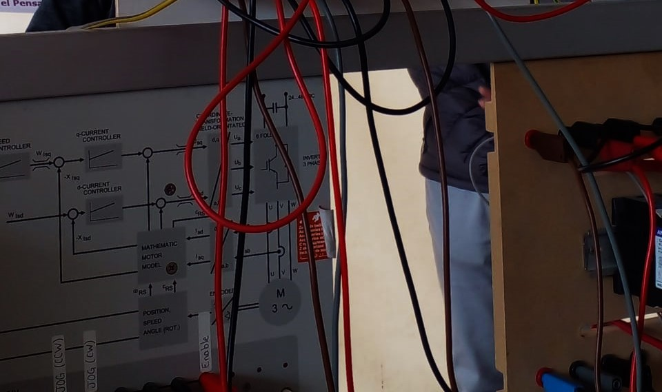

Conclusión
La automatización industrial es una piedra angular en el desarrollo tecnológico y productivo de las sociedades modernas. Su implementación no solo optimiza procesos, reduce costos operativos y mejora la eficiencia en las líneas de producción, sino que también abre las puertas a la innovación y la competitividad en un mercado global. El avance hacia fábricas inteligentes y la integración de tecnologías como la robótica, los sistemas SCADA y el Internet de las Cosas (IoT) son prueba de su importancia en la cuarta revolución industrial.
En este contexto, el uso de herramientas educativas, como el **PLC Control Shield para Arduino**, desempeña un papel esencial en la formación de futuros profesionales en automatización y control industrial. Estas herramientas permiten un enfoque práctico y accesible para comprender los fundamentos de los sistemas automatizados, promoviendo un aprendizaje activo desde etapas tempranas. Al integrar dispositivos como Arduino, ampliamente conocido por su versatilidad y bajo costo, con conceptos de control industrial, se genera una plataforma ideal para introducir a los estudiantes en este campo técnico de manera gradual y efectiva.
Los módulos didácticos accesibles no solo cierran la brecha entre la teoría y la práctica, sino que también fomentan el desarrollo de habilidades esenciales, como el diseño y la programación de sistemas de control. Estos recursos facilitan la comprensión de conceptos básicos, como el funcionamiento de entradas y salidas, la lógica de control, y la estructura de los procesos automatizados. Además, brindan un entorno seguro para experimentar, fallar y aprender de manera interactiva, lo que fortalece la confianza y las competencias técnicas de los aprendices.

En el ámbito educativo, esta metodología también impulsa una transición hacia la enseñanza moderna y digitalizada, en la que los estudiantes no solo adquieren conocimientos, sino que desarrollan competencias prácticas aplicables al mundo real. Al integrar estos recursos en las aulas, se fomenta la creatividad y el pensamiento crítico, mientras se prepara a los jóvenes para enfrentar los desafíos de la industria actual y futura.
Por último, el acceso a herramientas como el PLC Control Shield no solo democratiza la enseñanza tecnológica, sino que también actúa como catalizador para la modernización y la innovación en los sistemas educativos. Esta accesibilidad asegura que más personas puedan participar en la construcción de un futuro tecnológico sostenible, promoviendo el desarrollo económico y social en diversas comunidades.
En resumen, la automatización industrial y la inclusión de herramientas didácticas modernas no solo son clave para la formación técnica, sino también para impulsar un ecosistema educativo que fomente la innovación, la equidad y el progreso hacia una sociedad más preparada tecnológicamente.

Integrantes de equipo
- -Orozco Juarez Sarah Yoselin
- -Arteaga Hernandez Josue
- -Monrroy Baurista Alexa Monserrat
- -Velazques Artega Mauro Aldebaran